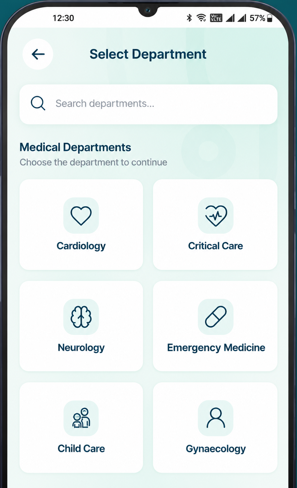

STEP 01
Connect with the
Right Specialist
Open Curemos and browse specialists by department — Cardiology, Neurology, Emergency Medicine, and more. Find the right expert in seconds.
CardiologyNeurologyCritical CareGynecologyNephrology
